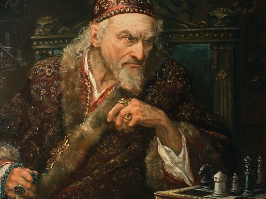
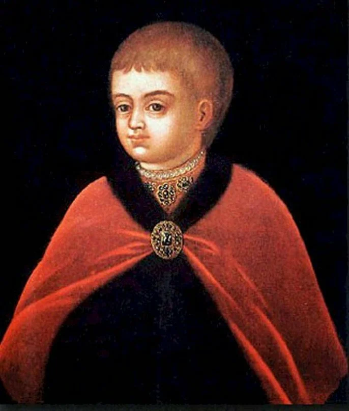

Ива́н IV Васи́льевич, прозванный Гро́зным (впервые — в «Истории Российской» Татищева), в постриге — Иона (25 августа 1530, село Коломенское под Москвой — 18 (28) марта 1584, Москва) — государь, великий князь московский и всея Руси с 1533 года, первый венчаный царь всея Руси (с 1547 года; кроме 1575—1576, когда «великим князем всея Руси» номинально был Симеон Бекбулатович).
Старший сын великого князя московского Василия III и Елены Глинской. Номинально Иван стал правителем в три года. После восстания в Москве 1547 года правил с участием круга приближённых лиц — «Избранной Рады». При нём начался созыв Земских соборов, составлен Судебник 1550 года. Проведены реформы военной службы, судебной системы, государственного управления, в том числе внедрены элементы самоуправления на местном уровне (губная, земская и другие реформы). Были покорены Казанское, Астраханское и Сибирское ханства, присоединены Башкирия, часть земель Ногайской Орды. Таким образом, при Иване IV прирост территории Русского государства составил почти 100 %, с 2,8 млн км² до 5,4 млн км², к завершению его царствования Россия стала размером больше всей остальной Европы.
В 1560 году Избранная рада была упразднена, её главные деятели попали в опалу и началось полностью самостоятельное правление царя в России. Вторая половина правления Ивана Грозного была отмечена полосой неудач в Ливонской войне и учреждением опричнины, в ходе которой была разорена страна и нанесён удар старой родовой аристократии и, по мнению некоторых исследователей, укреплены позиции худородного поместного дворянства. В 1572 году Иван Грозный принял участие в королевских выборах в Речи Посполитой, однако впоследствии отказался от этого. Формально Иван IV правил дольше любого из когда-либо стоявших во главе Российского государства правителей — 50 лет и 105 дней.
По отцовской линии Иван происходил из московской ветви династии Рюриковичей, по материнской — от литовских князей Глинских. Бабушка по отцу, София Палеолог — из рода византийских императоров. Бабушка по матери Анна Якшич — дочь сербского воеводы Стефана Якшича. Иван стал первым сыном великого князя Василия III от второй жены, после долгих лет бездетности. Родившись 25 августа, он получил имя Иван в честь святого Иоанна Предтечи, день Усекновения главы которого приходится на 29 августа. В некоторых текстах той эпохи изредка упоминается также с именами Тит и Смарагд, в соответствии с традицией многоименности у Рюриковичей. Крещён в Троице-Сергиевом монастыре игуменом Иоасафом (Скрипицыным); в восприемники были избраны два старца Иосифо-Волоцкого монастыря — инок Кассиан Босой и игумен Даниил.
Предание гласит, что в честь рождения Иоанна была заложена церковь Вознесения в Коломенском. Согласно установленному на Руси праву престолонаследия, великокняжеский престол переходил к старшему сыну монарха, однако Ивану ("прямое имя" по дню рождения — Тит) было всего три года, когда его отец великий князь Василий III серьёзно заболел. Ближайшими претендентами на трон, кроме малолетнего Ивана, были младшие братья Василия. Из шестерых сыновей Ивана III осталось двое — князь Старицкий Андрей и князь Дмитровский Юрий. Предвидя скорую смерть, Василий III сформировал для управления государством «седьмочисленную» боярскую комиссию (именно к опекунскому совету при малолетнем великом князе впервые стало применяться название «Семибоярщина» , чаще в современности ассоциирующееся исключительно с олигархическим боярским правительством эпохи Смутного Времени в период после свержения царя Василия Шуйского). Опекуны должны были беречь Ивана, пока он не достигнет 15 лет. В опекунский совет вошли его дядя, князь Андрей Старицкий (младший брат отца — Василия III), М. Л. Глинский (дядя матери — великой княгини Елены) и советники: братья Шуйские (Василий и Иван), Михаил Захарьин, Михаил Тучков, Михаил Воронцов. По замыслу великого князя, этим должны были сохраниться порядок правления страной доверенными людьми и уменьшиться распри в аристократической Боярской думе. Существование регентского совета признаётся не всеми историками: так, по версии историка А. А. Зимина, Василий III передал ведение государственных дел Боярской думе, а опекунами наследника назначил М. Л. Глинского и Д. Ф. Бельского. Мамкой для Ивана была назначена А. Ф. Челяднина.
Василий III умер 3 декабря 1533 года, а уже через 8 дней бояре избавились от основного претендента на трон — Дмитровского князя Юрия.
Опекунский совет управлял страной меньше года, после чего его власть начала рушиться. В августе 1534 года произошёл ряд перестановок в правящих кругах. 3 августа князь Семён Бельский и опытный военачальник окольничий Иван Васильевич Ляцкий оставили Серпухов и отъехали на службу к литовскому князю. 5 августа был арестован один из опекунов малолетнего Ивана — Михаил Глинский, который тогда же умер в тюрьме. За соумышленничество с перебежчиками были схвачены брат Семёна Бельского Иван и князь Иван Воротынский с детьми. В этом же месяце был арестован и ещё один член опекунского совета — Михаил Воронцов. Анализируя события августа 1534 года, историк С. М. Соловьёв делает вывод, что «всё это было следствием общего негодования вельмож на Елену и её любимца Ивана Оболенского».
Попытка Андрея Старицкого в 1537 году захватить власть окончилась неудачей: запертый в Новгороде с фронта и тыла, он был вынужден сдаться и закончил жизнь в тюрьме.
В апреле 1538 года 30-летняя Елена Глинская умерла (по одной из версий, она была отравлена боярами), а через шесть дней бояре (князья Иван и Василий Шуйские с советниками) избавились и от Оболенского. Митрополит Даниил и дьяк Фёдор Мищурин, убеждённые сторонники централизованного государства и активные деятели правительства Василия III и Елены Глинской, были немедленно отстранены от управления государством. Митрополит Даниил был отправлен в Иосифо-Волоцкий монастырь, а Мищурина «бояре казнили… не любя того, что он стоял за великого князя дела». По воспоминаниям самого Ивана, «князь Василий и Иван Шуйские самовольно навязались в опекуны и таким образом воцарились», будущего царя с братом Юрием «начали воспитывать как чужеземцев или последних бедняков», вплоть до «лишений в одежде и пище».
Де-факто управление русским государством Шуйскими при будущем царе длилось с 1538 по 1543 годы, за это время был изгнан и убит троюродный брат Грозного, советник Иван Бельский. Своё первое влияние на правление боярщины Иван оказал в декабре 1543 года, когда ещё в отрочестве обвинил Андрея Шуйского Честокола в измене и велел спустить на того собак. Через пару дней по воле молодого князя сделан наместником Фёдор Воронцов, которому Иван с детских лет широко симпатизировал. При Воронцове уже взрослеющий Иван стал вникать в государственные и военные дела бояр, пресекая попытки полноправия и раздела власти.
В 1545 году Иван достиг совершеннолетия в возрасте 15 лет, таким образом став полноправным правителем. Одним из сильных впечатлений царя в юности были «великий пожар» в Москве, уничтоживший свыше 25 тысяч домов, и Московское восстание 1547 года. После убийства одного из Глинских, родственника царя, бунтовщики явились в село Воробьёво, где укрылся великий князь, и потребовали выдачи остальных Глинских. С большим трудом удалось уговорить толпу разойтись, убеждая её, что Глинских в Воробьёве нет.
Биография
Ранние годы

Детство великого князя
- На начало статьи - - Ранние годы -
Выполнил студент группы ИПЗ 19-1(2) Янишевский С. Р.